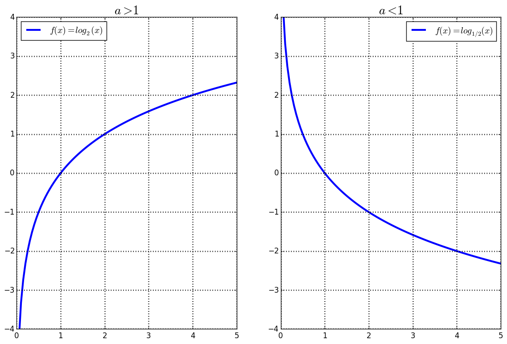

| « 4.2 | up | 4.4 » |
4.3 — Logarithmic Functions
A logarithmic function is written as $f(x) = \log_a(x)$ for $a \gt 0$.
Properties
| Domain | $(0, \infty)$ |
| Range | $(-\infty, \infty)$ |
| $x$-intercepts | $(1,0)$ |
| $y$-intercepts | none |
| Increasing | when $a \gt 1$ |
| Decreasing | when $a \lt 1$ |
| Vertical Asymptotes | x=0 |
| Horizontal Asymptotes | none |
Definition
The logarithm of an argument $x$ to a base $a$ is the value $y$ such that $x=a^y$. That is, $$ y = \log_a(x) \iff x = a^y \;\;\;\; (a \gt 0) $$
Write the following equalities as logarithms:
- $2^3 = 8$
- $p^q = \frac{1}{3}$
- $\log_2(8) = 3$
- $\log_p(\frac{1}{3}) = q$
Write the following equalities as exponents:
- $6 = log_{\frac{1}{2}}(y)$
- $\log_{\pi}(7) = x$
- $(\frac{1}{2})^6 = y$
- $\pi^x = 7$
(Some special examples). Solve for $y$:
- $y = \log_a(0)$
- $y = \log_a(1)$
- $y = \log_a(a)$
- undefined!
- $y = 0$
- $y = 1$
Logarithm as Inverse of Exponentiation
If $f(x) = \log_a(x), \; a \gt 0$, then $f^{-1}(x) = a^x$.Therefore, $$ \log_a(a^x) = x $$ since domain$(\log_a(x)) = (0, \infty)$ and $a^x \gt 0$ for all $x$. Also, $$ a^{\log_a(x)} = x $$ since domain$(a^x) = (-\infty, \infty)$.
Simplify the following:
- $\displaystyle \log_{\frac{5}{7}}\left(\frac{5}{7}\right)^y$
- $4.3^{\log_{4.3}(6)}$
- $y$
- $6$
Some Special Bases
A couple bases are frequently used and thus have special notation / shorthand.| Name | Base ($a$) | Notation | Uses |
|---|---|---|---|
| Common Log | $10$ | $\log(x) = \log_{10}(x)$ | Scientific computations |
| Natural Log | $e \approx 2.72$ | $\ln(x) = \log_e(x)$ | Applications of rates of change |
| Binary Log | $2$ | $\log_2(x)$ | Computer applications |
Evaluate the folowing:
- $\ln( \frac{1}{e^2} )$
- $\log_2(4)$
- $\log(100^{3y})$
- $e^{\ln(4t)}$
- $-2$
- $2$
- $6y$
- $4t$
Issues Regarding Evaluation and Order of Operations
If the argument to a logarithm contains only one term, we often omit the parenthesis. For instance, $$ \log_a(x) = \log_ax $$ but, $$ \log_ax+y \neq \log_a(x+y) $$ .- $4+\log_24$
- $\log_24+4$
- $\log_2(4+4)$
- $\log_24\cdot 4$
- $\log_2(4\cdot 4)$
- $4\log_24$
- $\log_24/4$
- $\log_2(4/4)$
- $\log_24^4$
- $(\log_24)^4$
- $\log_2\frac{1}{4}$
- $\displaystyle \frac{1}{\log_24}$
- $\displaystyle \log_2\frac{1}{2}$
- $6$
- $6$
- $3$
- $8$
- $4$
- $8$
- $1/2$
- $0$
- $8$
- $16$
- $-2$
- $1/2$
- $-1$
Determining Domain of a Logarithm
Find the domain for the following functions:
- $f(x) = \log_a(x-1)$
- $f(x) = \log_a(x^2-1)$
- $f(x) = \log_a(2-6x)$
- $(1,\infty)$
- $(-\infty,-1,) \cup (1,\infty)$
- $(-\infty, \frac{1}{3})$
Graphing Logarithms
Graph the following:
- $y=\log_2x$
- $y=\log_2(-x)$
- $y=-\log_2x$
- $y=-\log_2(-x)$
- $y=\log_2x - 1$
- $y=\log_2(x-1)$
- $y=\log_2(1-x)$
- $y=1-log_2x$